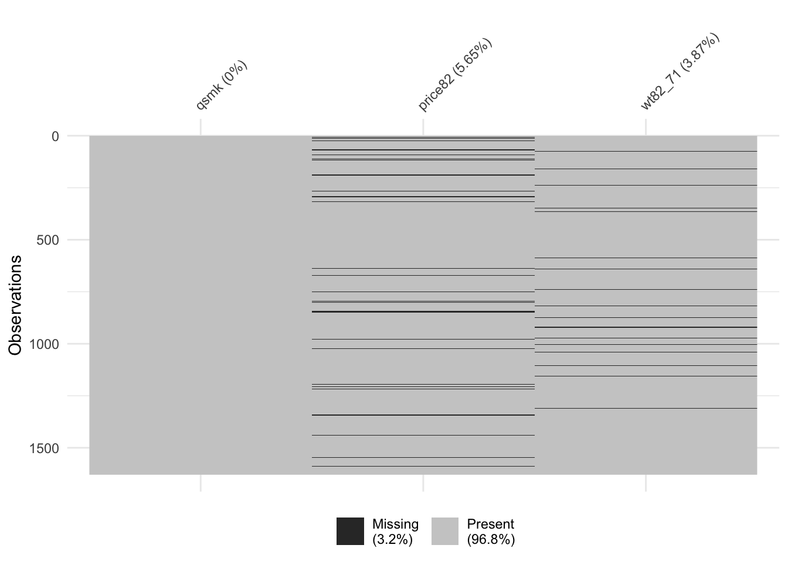
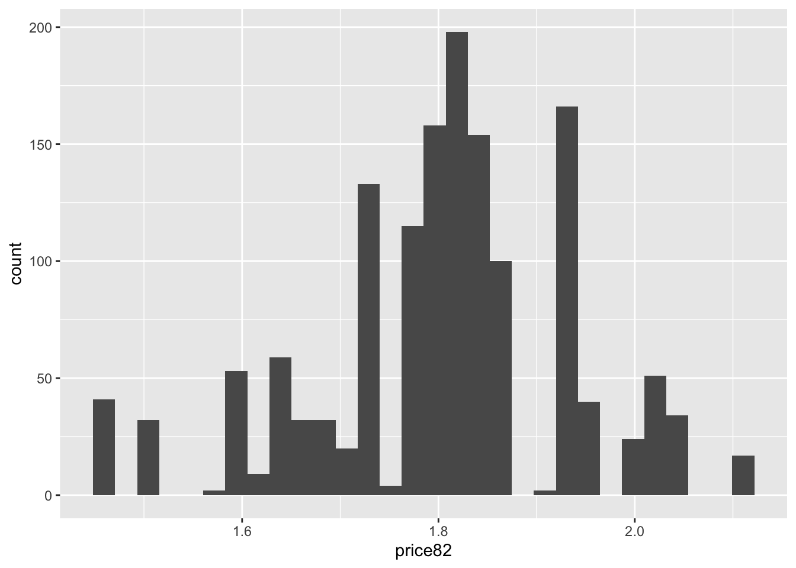

Chapter 10 Instrumental variables
10.1 Readings
The required reading for this chapter is:
- Hernán and Robins (2020a) The chapter covers IV analysis and required assumptions
There are also some supplemental readings you may find useful.
This is didactic paper summarizing IV approaches for epidemiology:
- Greenland (2000)
This is an example of an application of IVs in epidemiology:
- Austin, Harper, and Strumpf (2016)
While this paper summarizes the NHEFS study and initial findings:
- Madans et al. (1986)
10.2 Introduction to instrumental variables
We have been utilizing regression approaches to quantify relationships between a particular exposure and outcome of interest, ranging from temperature and mortality in a time-series setting to smoking and cardiovascular outcomes in a longitudinal cohort setting. In these models, we have typically been including covariates that were potential confounders of the relationship of interest (e.g. seasonal trends in the time-series setting, age and sex in the cohort setting).
Confounding adjustment is an essential step in ensuring (conditional) exchangeability between the exposed and unexposed. This allows us to essentially treat the exposed and unexposed as exchangeable and use them as proxies for what would have happened in the other group if their exposure status were reversed (potential outcome if the exposed had been unexposed and vice versa).
In chapter 8 we explored some alternative methods to account for confounding other than adding confounders in a regression model. These approaches are especially useful in the case of exposure-confounding feedback and some mediation analyses cases. However, there is one issue that we cannot overcome regardless of the confounding adjustment method: unmeasured (or unknown) confounding. In order to account for confounding (regardless of approach) we need information on the confounders; therefore, these variables need to be measured. If we are unable to measure a known confounder, or if there exists an unknown confounder, we cannot account for them, and the conditional exchangeability assumption fails. This assumption is actually unverifiable in observational studies, as there is no way of verifying that we have measured all confounders. In the FHS it is plausible that we haven’t measured all confounders for smoking (or smoking cessation)—for example, we don’t have information on diet or physical activity which may be consequences of smoking, but also affect future smoking. What can we do, then, if we have a good reason to believe there exist unmeausured or unknown confounders in any given study?
Approaches that leverage instrumental variables can provide alternatives to the conditional exchangeability (no unmeasured confounding) assumption. We can estimate effects of exposure on an outcome of interest even in the presence of unmeasured confounding if there exists a third variable that:
- Is associated with the exposure (causes the exposure or shares a common cause with it);
- Does not share unmeasured common causes with the outcome; and
- Only causes the outcome through the exposure.
This kind of variable is called an instrumental variable, or an instrument of the exposure. If an instrumental variable exists, then we can estimate the effect of exposure on the outcome based on the associations between instrument and outcome and instrument and exposure, even if there are unmeasured confounders between exposure and outcome. (There actually is another condition that needs to hold, in order for us to estimate the average causal effect of exposure in the population—more on this later.)
An instrumental variable can be very useful because it essentially is something that helps to “randomize” (although typically not completely) people into exposure groups. This is how an instrumental variable can help us estimate an effect that avoids (when done properly) bias from unmeasured confounding. As a very extreme case, you could think of a coin flip (when assigning treatment for a randomized control trial, for example) as an instrumental variable—in that case, it is associated with exposure (everyone who gets heads is given the treatment, everyone who doesn’t is kept as a control), it doesn’t share unmeasured causes with the outcome (since it’s a random coin flip, it won’t be linked to any other characteristics, measured or unmeasured—the only thing influencing it is the physics of the coin flip), and it only influences the outcome through the exposure (in other words, people who get heads might have better average outcomes, but the only possible reason is because they got the treatment).
Good instrumental variables will often have this feel of creating some randomization through a random mechanism like a coin flip or a lottery. For example, in Fort Collins, you may enter a lottery to send your child to any school outside of your neighborhood assigned school. For any given school (that’s popular enough), there will be some students who enter the lottery and “win”, and so go to that school, and others that enter and don’t get a spot, so go to a different school. As long as the lottery is really random, we can probably assume that the students who win a spot and those who don’t are otherwise very, very similar. In this scenario, the lottery for spots at the school creates a very good instrumental variable if you want to measure the effects of attending that school versus other available schools—you’d do this by comparing only the students who entered through the lottery, and comparing those who won a spot to those who didn’t. By contrast, there’d probably be a lot more unmeasured confounding if you compared the students who went because it was their neighborhood school to those who went through the lottery system (or even if you compared students who went to different schools because they were in different neighborhoods and attended their neighborhood school). Unlike the coin toss example, in this case, the instrument might not be perfect—there might be some people who “win” the lottery but ultimately decide to go to other schools, or others that “lost” the lottery but somehow got a spot.
There is a wide variety in studies that have used instrumental variable approaches, and it can be very interesting to read through and assess the quality of the instrument in them. Some are likely pretty strong—for example, there are studies that use the lottery system for the Vietnam draft as an instrumental variable for college education, with the assumption that people with low draft numbers (i.e., likely to be drafted based on the lottery) might have been more likely to join or stay in college to avoid being drafted. Other instrumental variables might be less protective against unmeasured confounding. For example, some have used the distance to a hospital that performs a certain procedure as an instrument for getting that treatment—depending on your study population, there’s a chance that more cutting-edge hospitals might have locations that are associated with potential confounders (for example, many of the top medical school hospitals were originally sited in poorer areas of a city, to serve needs for medical care).
In this module, we’ll explore how you can understand, use, and code instrumental variable analysis. We will introduce a new dataset, one from the NHANES I Epidemiologic Followup Study (NHEFS). (From the NCHS: “The NEHFS is a national longitudinal study, was jointly initiated by the National Center for Health Statistics (NCHS) and the National Institute on Aging in collaboration with other agencies of the Public Health Service. The NHEFS was designed to investigate the relationships between clinical, nutritional, and behavioral factors assessed in the first National Health and Nutrition Examination Survey NHANES I and subsequent morbidity, mortality, and hospital utilization, as well as changes in risk factors, functional limitation, and institutionalization.”)
The data subset from NEHFS consists of smokers (at baseline) followed between 1971 and 1982. The research question of interest is the effect of smoking cessation on 10-year weight change. We will explore the relationship between exposure and outcome based on traditional outcome regression and then try to generate an estimate for this effect using instrumental variable analysis.
10.3 The NHEFS data
Let’s explore the NHEFS dataset, which is the dataset used in the example highlighted
this chapter’s required reading, Hernán and Robins (2020a). You can download a copy from the GitHub page for this book, here. The data are saved in a csv format (that is, a plain text file, with commas used as the delimiter), and so they can be read into R using the read_csv function from the readr package (part of the tidyverse), similar to the previous datasets we have been using. If you have saved the data in a “data” subdirectory of your current working directory then you can use the following code:
## # A tibble: 1,629 × 64
## seqn qsmk death yrdth modth dadth sbp dbp sex age race income
## <dbl> <dbl> <dbl> <dbl> <dbl> <dbl> <dbl> <dbl> <dbl> <dbl> <dbl> <dbl>
## 1 233 0 0 NA NA NA 175 96 0 42 1 19
## 2 235 0 0 NA NA NA 123 80 0 36 0 18
## 3 244 0 0 NA NA NA 115 75 1 56 1 15
## 4 245 0 1 85 2 14 148 78 0 68 1 15
## 5 252 0 0 NA NA NA 118 77 0 40 0 18
## 6 257 0 0 NA NA NA 141 83 1 43 1 11
## 7 262 0 0 NA NA NA 132 69 1 56 0 19
## 8 266 0 0 NA NA NA 100 53 1 29 0 22
## 9 419 0 1 84 10 13 163 79 0 51 0 18
## 10 420 0 1 86 10 17 184 106 0 43 0 16
## # ℹ 1,619 more rows
## # ℹ 52 more variables: marital <dbl>, school <dbl>, education <dbl>, ht <dbl>,
## # wt71 <dbl>, wt82 <dbl>, wt82_71 <dbl>, birthplace <dbl>,
## # smokeintensity <dbl>, smkintensity82_71 <dbl>, smokeyrs <dbl>,
## # asthma <dbl>, bronch <dbl>, tb <dbl>, hf <dbl>, hbp <dbl>,
## # pepticulcer <dbl>, colitis <dbl>, hepatitis <dbl>, chroniccough <dbl>,
## # hayfever <dbl>, diabetes <dbl>, polio <dbl>, tumor <dbl>, …There is a codebook in the the same folder as the dataset, which you can download and read to familiarize yourself with the variables in the data.
We see that this is subset of the NHEFS study with 1,629 participants. The unique identifier for participant is seqn (equivalent to the randid variable in the FHS data). Unlike the FHS data, there is only one observation per participant in this study, with data on mortality over a 12-year period (1971-1982) with a death variable (1 for a death during follow-up, 0 otherwise) and three separate date variables for day (dadth), month (modth) and year (yrdth) of death. The dataset also includes information on several variables at baseline including demographics (age, sex, race, marital, income, school etc), as well as several other potential morbidity and diagnosis variables at baseline. There are also data on blood pressure at the end of follow-up (dbp and sbp). The exposure of interest is smoking cessation during follow-up (qsmk) and the outcome is change in weight from beginning to end of follow-up in kgs (wt82_71). The instrument we will be using later is based on cigarette pricing at the end of follow-up (price82).
Let’s see if there’s any missingness in the data. We will focus specifically on the exposure, outcome and instrument values:

We see that there is a little bit of missingness in the outcome and cigarette price variables, while the data on the exposure are complete. We will limit the dataset to those with data on exposure, outcome, and instrument (there’s only missingness on the outcome and the instrument, so we filter based on that)
The limited dataset is down to 1,476 participants (from 1,629). Now let’s check the distributions of some of the variables of interest:
## # A tibble: 2 × 2
## qsmk n
## <dbl> <int>
## 1 0 1201
## 2 1 428We see that 428 (about 30%) of participants quit smoking. Let’s check the distribution of weight change by smoking cessation.
wtch_vs_qsmk<- nhefs_iv %>%
group_by(qsmk) %>%
summarize(perc_25 = quantile(wt82_71, 0.25),
mean = mean(wt82_71),
median = median(wt82_71),
perc_75 = quantile(wt82_71, 0.75))
wtch_vs_qsmk## # A tibble: 2 × 5
## qsmk perc_25 mean median perc_75
## <dbl> <dbl> <dbl> <dbl> <dbl>
## 1 0 -1.81 2.00 2.15 6.12
## 2 1 -0.00117 4.67 3.97 9.72We see that there is higher weight gain among quitters on average as well as consistently higher change across quartiles.
nhefs_iv %>%
group_by(qsmk) %>%
ggplot(aes(x = wt82_71)) +
geom_histogram() +
facet_wrap(~ qsmk, ncol = 1, scale = "free_y")There doesn’t seem to be a large difference between the two distributions, however we do observe some higher values in the quitters.
Let’s explore if the exposure has an effect on the outcome. We start with a simple unadjusted model:
library(broom)
qsmk_mod1 <- lm(wt82_71 ~ qsmk, data = nhefs_iv)
qsmk_mod1 %>%
tidy() %>%
filter(term == 'qsmk') %>%
mutate(effect = estimate,
low_effect = estimate - 1.96 * std.error,
high_effect = estimate + 1.96 * std.error) %>%
select(term, effect, low_effect, high_effect)## # A tibble: 1 × 4
## term effect low_effect high_effect
## <chr> <dbl> <dbl> <dbl>
## 1 qsmk 2.67 1.75 3.58The results indicate that quitting smoking is associated with a 2.7 kg increase in weight (95% CI: 1.7–3.6). It is likely, however, that whether or not you quit smoking might be associated with covariates that are also likely to influence the outcome (such as age and sex), so let’s try an adjusted model adjusting for several baseline covariates, including duration of smoking and smoking intensity, as well as weight at baseline and sociodemographics.
qsmk_mod2 <- lm(wt82_71 ~ qsmk + sex + race + age +
smokeintensity + smokeyrs + wt71,
data=nhefs_iv)
qsmk_mod2 %>%
tidy() %>%
filter(term == 'qsmk') %>%
mutate(effect = estimate,
low_effect = estimate - 1.96 * std.error,
high_effect = estimate + 1.96 * std.error) %>%
select(term, effect, low_effect, high_effect)## # A tibble: 1 × 4
## term effect low_effect high_effect
## <chr> <dbl> <dbl> <dbl>
## 1 qsmk 3.40 2.51 4.30We see that the adjusted effect estimate is somewhat higher than the unadjusted estimate, with smoking cessation associated with a 3.4 kg increase (95% CI: 2.5–4.3). It is still likely that we are not accounting for all confounders. For example, those who quit smoking could be doing so because of a desire to lead a healthy lifestyle or because of underlying health conditions that may also affect the outcome—these aren’t things that we’re measuring, but they could be associated with both the exposure and the outcome. It is therefore plausible that there is unmeasured (or unknown) confounding for the effect of smoking cessation on weight change. A valid instrument can help us identify a causal effect even in the presence of such confounding.
10.4 Identifying an instrumental variable, checking the IV conditions and the standard IV estimand
As mentioned above, we will be using cigarette pricing in each participant’s state of residence as an instrument for the exposure of interest. The idea is that the participant might be less likely to smoke if it costs more. Some states elevate cigarette prices in an effort to discourage smoking (and gain some funds for the state). These elevated prices might reduce smoking rates in that state, and so influence the probable level of exposure. These elevated prices could influence the outcome variable (weight gain), but only through how they affect the likelihood of exposure. In theory, it seems like this could be a reasonable instrument for smoking exposure, then, but you should always try to check to see if your data looks like it aligns with those assumptions.
We will therefore check to see if the conditions for a valid instrument highlighted above hold for cigarette pricing (to the extent possible), and estimate the standard IV estimand for the effect of exposure.
Applied exercise: Identify an instrument for the effect of smoking cessation on weight change and assess the IV conditions
- What is the relationship of cigarette pricing and smoking cessation? Is there a significant difference in the probability of exposure across levels of the instrument? Which IV condition does this satisfy?
- What is the difference in sample averages for weight change across levels of the instrument?
- Estimate the IV estimand for the above quantities.
Applied exercise: Example code
- What is the relationship of cigarette pricing and smoking cessation? Is there a significant difference in the probability of exposure across levels of the instrument? Which IV condition does this satisfy?
As we mentioned above, we will be using cigarette pricing as an instrument for the exposure. The first condition for a valid instrumental variable is that is has to be associated with the exposure. Our rationale here is that higher cigarette prices act as a financial incentive for people to quit smoking. Even though we are assuming that cigarette pricing causes smoking cessation, this isn’t necessary for an instrument to be valid. It just has to be merely associated with the exposure. This is actually the only condition we can test formally and verify, as it makes no causal assumptions. We can check whether cigarette pricing and smoking cessation are associated using F-statistics, r2, or the risk difference.
We will start by examining the distribution of cigarette prices in each participant’s state of residence in 1982 and create a binary variable for cigarette pricing.
nhefs_iv %>%
summarize(min = min(price82),
perc_25 = quantile(price82, 0.25),
mean = mean(price82),
median = median(price82),
perc_75 = quantile(price82, 0.75),
max = max(price82))## # A tibble: 1 × 6
## min perc_25 mean median perc_75 max
## <dbl> <dbl> <dbl> <dbl> <dbl> <dbl>
## 1 1.45 1.74 1.81 1.81 1.87 2.10
Let’s create a binary cigarette price variable using a cutoff of $1.50, as in Hernán and Robins (2020a):
library(forcats)
nhefs_iv <- nhefs_iv %>%
mutate(highprice = case_when(
price82 >= 1.5 ~ 1,
price82 < 1.5 ~ 0))
nhefs_iv %>%
select(seqn, price82, highprice) %>%
head()## # A tibble: 6 × 3
## seqn price82 highprice
## <dbl> <dbl> <dbl>
## 1 233 1.74 1
## 2 235 1.80 1
## 3 244 1.51 1
## 4 245 1.45 0
## 5 252 1.80 1
## 6 257 2.03 1We can get an F-value and p-value for the F-test with a simple analysis of variance:
## # A tibble: 2 × 6
## term df sumsq meansq statistic p.value
## <chr> <dbl> <dbl> <dbl> <dbl> <dbl>
## 1 highprice 1 0.157 0.157 0.822 0.365
## 2 Residuals 1474 281. 0.191 NA NAWe see that there is a weak association between the instrument and smoking cessation. (p-value for the F-test > 0.36 and the F value, 0.822, is rather small). Generally a good rule of thumb for a strong instrument is an F-value of at least 10, so here we have a fairly weak instrument.
Let’s go ahead and estimate the risk difference anyway. The risk difference we are after is:
\[ Pr[X=1|Z=1] - Pr[X=1|Z=0] \]
where \(X\) is the exposure of interest (smoking cessation) and \(Z\) is the instrument (high cigarette prices). In other words, we want to estimate the different in the probability of quitting smoking (\(X = 1\)) in states with high cigarette prices (\(Z = 1\)) versus the probability of quitting smoking (\(X = 1\)) in states with low cigarette prices (\(Z = 0\)).
A two-by-two table for the values of X and Z, as well as probabilities in this format, is given by:
## highprice
## qsmk 0 1
## 0 33 1065
## 1 8 370## highprice
## qsmk 0 1
## 0 0.8048780 0.7421603
## 1 0.1951220 0.2578397The risk difference can be seen in the bottom row, which compares the probability of quitting smoking in states with and without high cigarette prices. The risk difference is therefore \(0.26 - 0.20 = 0.06\), or a 6% higher probability of quitting among those living in states with high cigarette prices.
The other conditions for a valid instrument are actually not empirically verifiable. We have to assume that the instrument only causes the outcome though the exposure (this seems plausible), and that it shares no unmeasured common causes with the outcome (this is perhaps less of a safe assumption to make, since state-level choices on smoking taxes might also be linked with other factors, like the political party in power in the state, which could itself be linked both to characteristics of people in the state and could also influence other health-related local laws). We continue with our candidate instrument nonetheless, to provide an example of the mechanics of this type of analysis.
- What is the difference in sample averages for weight change across levels of the instrument?
Now let’s assess the relationship between instrument and outcome. We will compare sample averages in weight change among those living in states with high prices compared to low prices and estimate the difference:
\[ E[Y|Z=1] - E[Y|Z=0] \]
where \(Y\) is the outcome of interest (weight change) and \(Z\) is, again, the instrument—whether the person lived in a state with high cigarette prices. We can test for a significant change in the sample means using a student’s t-test:
## # A tibble: 1 × 10
## estimate estimate1 estimate2 statistic p.value parameter conf.low conf.high
## <dbl> <dbl> <dbl> <dbl> <dbl> <dbl> <dbl> <dbl>
## 1 -0.150 2.54 2.69 -0.102 0.919 41.6 -3.13 2.83
## # ℹ 2 more variables: method <chr>, alternative <chr>We see that the difference between the two means is small and not statistically significant. The actual difference between those with highprice = 1 and highprice = 0 is 2.69 - 2.54 = 0.15, or, in other words, living in a state with high cigarette prices is associated with an average weight gain of 0.15 kg. This seems a much smaller estimate than the one we generated for smoking cessation using linear regression. This is not the IV estimand, however, only one component of it.
- Estimate the IV estimand the above quantities.
The actual IV estimand is the following quantity:
\[ \frac{E[Y|Z=1] - E[Y|Z=0]}{E[X|Z=1] - E[X|Z=0]} \]
Notice that now we’re bringing in not only the association between the instrument and the outcome, but also that between the instrument and the exposure (which helps account for how strong or weak the instrument is in influencing the exposure). In the case of a perfect instrument (like the coin flip in the randomized trial example), the denominator here would equal 1, since everyone with heads would be exposed to the treatment (\(E[X|Z=1] = 1\)) and everyone with tails would be kept unexposed as a control (\(E[X|Z=0] = 0\)). Therefore, you can see that in the edge case of a perfect instrument, as in a randomized control trial with 100% compliance, the estimand reverts to the simple calculation you’d make with data from a randomized trial (\(E[Y|Z=1] - E[Y|Z=0]\), or the expected value of the outcome in those who were treated versus those who were controls). In the case of imperfect instruments, if the conditions for a valid instrument highlighted above (and the additional condition of homogeneity) are met, the prior equation gives you the average causal effect of exposure in the population (\(E[Y^{x=1} - Y^{x=0}]\)).
We’ve actually estimated the numerator and denominator for this quantity in exercises (2) and (1) respectively. We can go ahead and get the estimate for it:
\[ \frac{E[Y|Z=1] - E[Y|Z=0]}{E[X|Z=1] - E[X|Z=0]}=\frac{0.15}{0.06} = 2.5 \]
The IV estimate of 2.5 kg is actually much closer to the unadjusted estimate we got from the linear regression model (which was 2.7 kg).
10.5 The two-stage-least-squares estimator
Instead of the algebraic estimation of the IV estimate, we can actually use models to generate this estimate. This involves the two-stage-least-squares estimator, which is an extension of ordinary least squares. The approach involves fitting a model for the exposure as a function of the instrument,
\[ E[X|Z] = \alpha_{0} + \alpha_{1}Z \]
and then uses predicted values from this model (\(\hat{E}[X|Z]\)) as predictors in a second outcome model:
\[ E[Y|Z] = \beta_{0} + \beta_{1}\hat{E}[X|Z] \]
Let’s start by fitting a logistic model for the exposure with the instrument as the only predictor and generate predicted values:
## # A tibble: 2 × 5
## term estimate std.error statistic p.value
## <chr> <dbl> <dbl> <dbl> <dbl>
## 1 (Intercept) -1.42 0.394 -3.60 0.000323
## 2 highprice 0.360 0.399 0.903 0.367We then use the predicted values as a predictor in an outcome model:
modY_Z <- glm(wt82_71 ~ ehat, data = nhefs_iv)
modY_Z %>%
tidy() %>%
filter(term == 'ehat') %>%
mutate(effect = estimate,
low_effect = estimate - 1.96 * std.error,
high_effect = estimate + 1.96 * std.error) %>%
select(term, effect, low_effect, high_effect)## # A tibble: 1 × 4
## term effect low_effect high_effect
## <chr> <dbl> <dbl> <dbl>
## 1 ehat 2.40 -36.9 41.7The parameter coefficient for ehat is actually the IV estimate from above, and we see that they are very close. The confidence intervals, however, for this estimate are very wide, owing primarily to the weakness of the instrument we are using.
The sem package in R actually allows us to apply the two-stage-least-squares estimator using a single function (tsls) as opposed to fitting separate models.
In this function call, we first give the formula for the relationship between
the outcome and the exposure (wt82_71 ~ qsmk), and then the right hand of the formula for
the instrumental variable (~ highprice):
library(sem)
IV_estimatemod <- tsls(wt82_71 ~ qsmk, ~ highprice, data = nhefs_iv)
IV_estimatemod %>%
summary()##
## 2SLS Estimates
##
## Model Formula: wt82_71 ~ qsmk
##
## Instruments: ~highprice
##
## Residuals:
## Min. 1st Qu. Median Mean 3rd Qu. Max.
## -43.34863 -4.00206 -0.02712 0.00000 4.17040 46.47022
##
## Estimate Std. Error t value Pr(>|t|)
## (Intercept) 2.068164 5.085098 0.40671 0.68428
## qsmk 2.396270 19.840037 0.12078 0.90388
##
## Residual standard error: 7.8561141 on 1474 degrees of freedomWe see that the tsls returns the same results as our two-stage approach above.
10.6 Sensitivity analysis
In our applied example above, we used a rather weak instrument and also assumed that the IV conditions hold. Even though we cannot empirically verify the IV condition that the instrument shares no unmeasured common causes with the outcome, we can relax our assumption from above (essentially no common causes) by including some measured covariates in our IV estimation (similar to our adjusted linear model)
Applied exercise: Estimate the IV estimand accounting for covariates and use alternative IV
- Estimate the IV estimand accounting for measured covariates. How do the results compare to above?
- Use an alternative IV based on cigarette price difference from 1971 to 1982 rather than pricing in 1982.
Applied exercise: Example code
- Estimate the IV estimand accounting for measured covariates. How do the results compare to above?
We can apply the tsls estimator while accounting for covariates in a similar fashion to the way we include them in a regression model. Note that here we will include these baseline covariates in both the exposure and outcome models:
IV_estimatemod2 <- tsls(wt82_71 ~ qsmk + sex + race + age +
smokeintensity + smokeyrs + wt71,
~ highprice + sex + race + age +
smokeintensity + smokeyrs + wt71,
data = nhefs_iv)
IV_estimatemod2 %>%
summary()##
## 2SLS Estimates
##
## Model Formula: wt82_71 ~ qsmk + sex + race + age + smokeintensity + smokeyrs +
## wt71
##
## Instruments: ~highprice + sex + race + age + smokeintensity + smokeyrs + wt71
##
## Residuals:
## Min. 1st Qu. Median Mean 3rd Qu. Max.
## -42.4300 -4.2232 -0.5136 0.0000 3.7656 45.2803
##
## Estimate Std. Error t value Pr(>|t|)
## (Intercept) 17.20016071 3.26576828 5.26680 1.5946e-07 ***
## qsmk 0.19115450 34.47472308 0.00554 0.995577
## sex -1.64538997 2.53297004 -0.64959 0.516059
## race 0.04684317 5.13471858 0.00912 0.992722
## age -0.17086392 0.28541924 -0.59864 0.549504
## smokeintensity 0.01091743 0.16311978 0.06693 0.946647
## smokeyrs 0.02802322 0.17843655 0.15705 0.875228
## wt71 -0.10151935 0.04715534 -2.15287 0.031491 *
## ---
## Signif. codes: 0 '***' 0.001 '**' 0.01 '*' 0.05 '.' 0.1 ' ' 1
##
## Residual standard error: 7.6124334 on 1468 degrees of freedomWe now see that the parameter coefficient for smoking cessation is attenuated compared to the results from above. Remember that covariate adjustment actually made the coefficient larger in the traditional linear regression. One potential explanation is that smoking cessation does not have the effect we thought it did and our linear model estimates we fitted at the beginning suffer from unmeasured confounding. A more likely explanation is a biased IV analysis. If our tsls model is misspecified, leading to bias, the weakness of the instrument actually amplifies this bias. A biased IV model (due to either a misspecified model or invalid instrument) combined with a weak instrument could be worse than unmeasured confounding in a traditional outcome regression analysis. A stronger instrument would be a much better option for us, if such an instrument exists.
- Use an alternative IV based on cigarette price difference from 1971 to 1982 rather than pricing in 1982.
Rather than use cigarette pricing at participant’s state of residence in 1982 as the candidate instrument let’s try using difference in cigarette prices from 1971 to 1982, price71_82 in our data.
nhefs_iv %>%
summarize(perc_25 = quantile(price71_82, 0.25),
mean = mean(price71_82),
median = median(price71_82),
perc_75 = quantile(price71_82, 0.75))## # A tibble: 1 × 4
## perc_25 mean median perc_75
## <dbl> <dbl> <dbl> <dbl>
## 1 0.201 0.332 0.336 0.444We see that the majority of prices increase (although some actually decrease) in the period between 1971 and 1982, with increases ranging from 0 to a little more than 50 cents. Let’s use an increase of $0.20 as our cutoff for a high increase in prices.
nhefs_iv <- nhefs_iv %>%
mutate(highincrease = case_when(
price71_82 >= 0.2 ~ 1,
price71_82 < 0.2 ~ 0))We can check the strength of this instrument based on its association with smoking cessation, as we did above:
## Df Sum Sq Mean Sq F value Pr(>F)
## highincrease 1 0.04 0.04101 0.215 0.643
## Residuals 1474 281.15 0.19074## highincrease
## qsmk 0 1
## 0 223 875
## 1 81 297## highincrease
## qsmk 0 1
## 0 0.7335526 0.7465870
## 1 0.2664474 0.2534130It actually turns out this is a weaker instrument that before and will likely not help us improve our results. We can try different cutoffs for either the absolute price or price difference (or some of the tax related variables in the data) in search of a better instrument, but a strong (and valid) instrument will not always be available. In many observational studies it is actually more likely that it doesn’t exist.
In this particular example a weak instrument provided similar results with an unadjusted analysis (albeit with very wide confidence intervals), and the covariate adjusted traditional outcome regression analysis results were actually greater in magnitude compared to the unadjusted or IV results. In this particular case, using the IV approach did not necessarily add much to our quest to quantify the potential effect of smoking cessation on weight change. However, in other settings (such as genetic epidemiology studies relying on genes as instruments for an exposure of interest or some pharmacoepidemiology examples relying on physician preferences as instruments for different treatment options), they have been very useful. Instrumental variables also likely have an important role in natural/quasi-experimental desings where the natural experiment or intervention can act as a good instrument for an alternative exposure of interest. This is an area where IV analysis probably remains underutilized.
In any case, IV analysis can be a useful tool in epidemiology, relying on different assumptions than more traditional approaches. However, instrumental variables should be used in light of their own limitations.
10.7 The condition of homogenetity (or alternative condition of monotonictiy)
We highlighted three conditions for valid instrument above and mentioned a required fourth condition, that of homogeneity, which is also required in order to estimate the average causal effect of exposure in the population. In the absence of this condition, we can only actually estimate bounds for the causal effect, which may be too wide and uninformative. These bounds will come with their own uncertainty and confidence intervals (CI for lower bound and upper bound respectively). Most researchers avoid estimating bounds for this reason and instead rely on the assumption of homogeneity in order to generate point estimates for the causal effects rather than bounds.
Hernán and Robins (2020a) outlines the homogeneity condition in terms of different ways it has been defined in the literature and what has to hold in each case for the condition to be true. Each definition can vary from being highly unlikely to hold in most cases, not intuitive, and mostly unverifiable (similar to the other 2 of 3 conditions above).
Given these limitations of the homogeneity conditions, researchers often rely on an alternative condition, that of monotonicity. The monotonicity condition stipulates that the effect (or association) between instrument and exposure be monotonous, i.e., that the presence of the instrument can only affect the propensity of exposure in one direction or at the very least not change it on the individual level. In other words, if we have an instrument \(Z\) with a positive association with exposure \(X\) then \(Z=1\) can only increase or at the very least not change the probability of exposure compared to \(Z=0\) in any given individual. If we have an instrument \(Z\) with a negative association with exposure \(X\) then \(Z=1\) can only decrease or at the very least not change the probability of exposure compared to \(Z=0\) in any given individual. In the example of the Fort Collins school lottery, we’d be assuming that winning the lottery would never decrease your probability of attending that school, only increase it or keep it unchanged. If this assumption holds then we can estimate the average causal effect of exposure \(X\) using instrument \(Z\), but not in the whole population. The effect we are estimating is the effect in the compliers, which can be a vague subset of the population (in the Fort Collins school example, those who complied with their lottery results—went to the school if they won and didn’t if they lost). Furthermore, the monotonicity assumption does not translate well in the case of continuous exposures, as would be the case in most environmental epidemiology studies. See more details in Hernán and Robins (2020a).
Despite the inherent limitations of the above conditions, it is important that they are addressed at least through a discussion surrounding them when IV analysis is used.